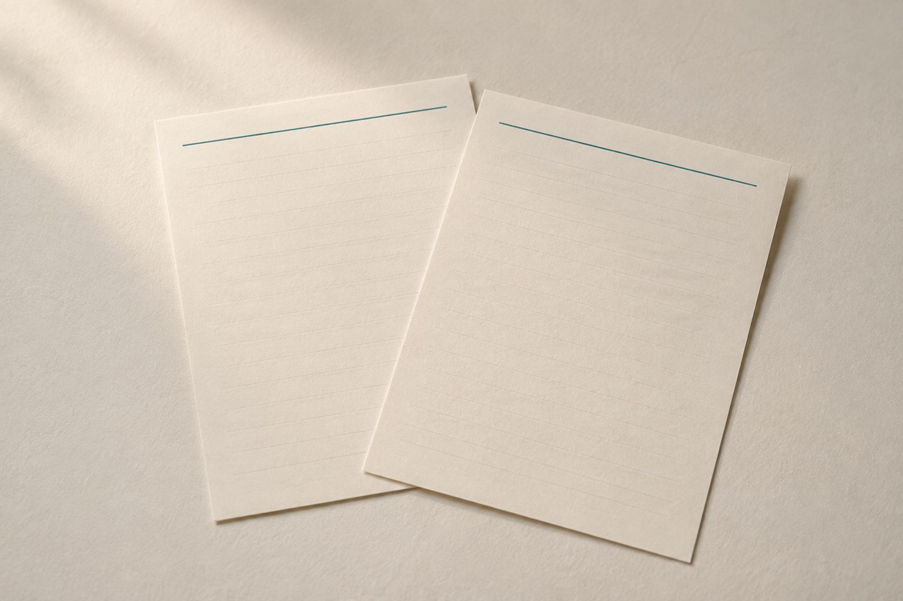
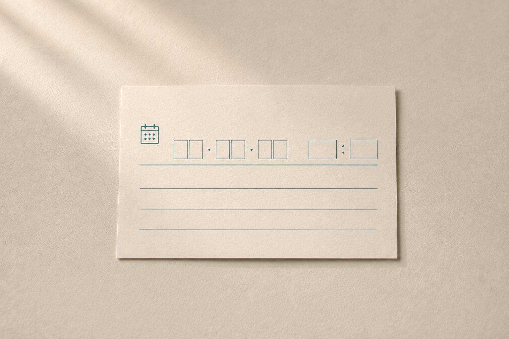
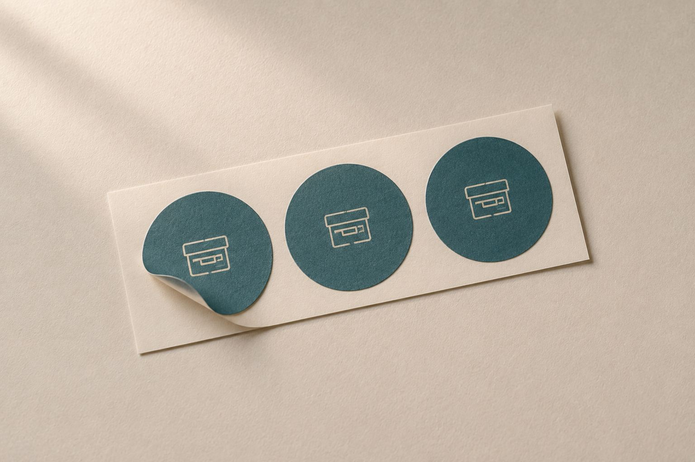
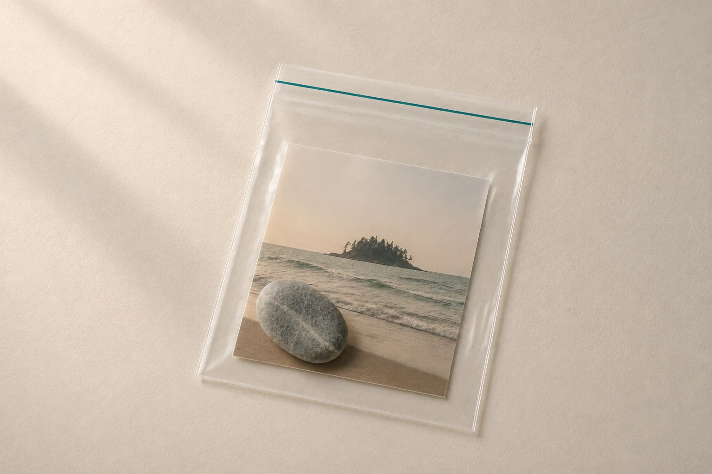

미래의 나에게
지금의 다짐을 적어두고, 1년 뒤 그대로 지켰는지 확인하고 싶은 여행.
오늘의 마음을 편지에 담아 태안히에 맡겨두세요. 6개월 또는 1년 뒤, 태안에 다시 와서 그때의 나를 만납니다.
좋았던 여행은 돌아오는 순간부터 조금씩 기억이 흐려집니다.
태안맡김은 그날의 마음 하나를 태안에 남겨두고, 언젠가 다시 그 마음을 만나러 오게 하고 싶었습니다.
여행에서 사 온 물건은 일상에 돌아오면 금세 익숙해집니다.
태안맡김은 반대로 합니다. 가져가지 않고, 두고 갑니다.
지금의 마음을 편지에 적어 태안히에 맡기고, 시간이 흐른 뒤 직접 찾으러 옵니다.
체크아웃으로 끝나던 하룻밤이, 다시 만나는 날까지 이어집니다.
지금의 다짐을 적어두고, 1년 뒤 그대로 지켰는지 확인하고 싶은 여행.
연인, 부부, 가족, 친구끼리 서로 몰래 편지를 남겨두고 싶은 여행.
기념일, 졸업, 결혼, 출산처럼 인생의 매듭이 되는 날을 남기고 싶은 여행.
언젠가 또 오자는 말 대신, 날짜가 있는 약속을 만들고 싶은 여행.
따로 준비하실 건 없습니다. 편지지와 맡김상자는 객실에 준비되어 있습니다.
맡기고 돌아간 뒤에는 한동안 아무 일도 일어나지 않습니다.
그동안 당신의 시간은 흐르고, 태안에 둔 편지는 맡긴 날 그대로 기다립니다.
그래서 같은 문장이, 다시 읽을 땐 전혀 다른 의미로 돌아옵니다.
맡긴 물건은 태안히에 다시 방문해 직접 받는 방식만 있습니다. 다시 태안에 오는 일까지가 이 서비스이기 때문입니다.
다시 만나는 날이 가까워지면 등록하신 연락처로 안내를 보내드립니다. 연락처가 바뀌면 알려주세요.
‘10개월 뒤쯤’처럼 대략의 시기만 알려주셔도 됩니다. 그 무렵에 맞춰 준비해 두겠습니다.
태안맡김상자는 손바닥보다 조금 큰 종이상자입니다. 객실에 편지지, 기록카드와 함께 한 세트로 준비되어 있습니다.




운영자는 밀봉된 편지와 기록물의 내용을 임의로 열람하지 않습니다.
태안맡김은 이제 막 시작한 서비스라 아직 후기가 많지 않습니다. 대신 어떤 분들이 무엇을 맡기고 가셨는지, 편지 내용은 열지 않은 채로 전해드립니다.
{{ c.body }}
{{ c.meta }}맡기신 분의 동의를 받아 상황만 옮겼습니다. 편지와 기록물의 내용은 확인하지 않습니다.
{{ para }}
1년 뒤의 당신이 가장 반가워할 문장을, 태안이 대신 보관합니다.